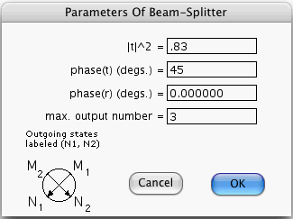

This window opens if you press the Generate Amplitudes... button of
the Node Prior-Info. window when its focus node is a valid Beam-Splitter.
The window allows you to specify certain parameters that characterize a
beam-splitter.
Even if the focus node is a beam-splitter, when you press the Generate Amplitudes... button, the computer will refuse to open the above window unless:
In the scalar-field case, M2, M1, N1 and N2 are the numbers of photons that pass through the two incoming and the two outgoing ports. Quantum Fog gives names of the form (N1,N2) to the states of the beam-splitter.
In the vector-field case, M2, M1, N1 and N2 also correspond in a 1-1 fashion to the incoming and outgoing ports, but instead of being non-negative integers, they are 2-component vectors. For example, M1 = (M1x, M1y), where M1x and M1y are non-negative integers. Quantum Fog gives names of the form ((N1x, N1y), (N2x, N2y)) to the states of the beam-splitter.
t and r , satisfying |t |2 + |r |2 = 1, are the complex transmission and reflection coefficients of the beam-splitter. You must enter into the first 3 editable boxes the magnitude squared of t , phase of t and phase of r . These 3 parameters completely specify the complex numbers t and r .
Consider the scalar-field case. Frequently, nets which contain a beam-splitter node are such that we know what is the maximum number of photons that will ever enter the beam-splitter. For example, suppose that a net starts with 2 photons in its root nodes, and that for one of the input states (M1, M2) of the beam-splitter, M1 + M2 = 3. Then the list of states of the beam-splitter node would be forced to include all states with N1 + N2 = 3. Or would it? Clearly, such states would never occur in any of the possible stories of the net. So if we were to exclude such states from the list of states of the beam-splitter node, the physical predictions of the net (that is, the results reported in the Node Probs., Bi-node Probs. and Stories windows) would still be valid. That's where the Max. Output Number editable field comes in. Quantum Fog lists those and only those states (N1, N2) for which N1 + N2 is smaller or equal to the value specified in the Max. Output Number box. In our example, we could set the Max. Output Number to 2 and thus exclude states with N1 + N2 = 3. Of course, excluding some states would cause the Total Probability button of the Node Prior-Info. window to give a result different from 1. But the physical predictions of the net would not change, and we would save memory by excluding unused baggage from the transition matrix.
In the vector-field case, Quantum Fog lists those and only those states ((N1x, N1y), (N2x, N2y)) for which N1x + N1y+ N2x+ N2y is smaller or equal to the value specified in the Max. Output Number box.
More information about Beam-Splitters can be found in the document entitled "Quantum Fog Library Of Essays" that accompanies this manual.